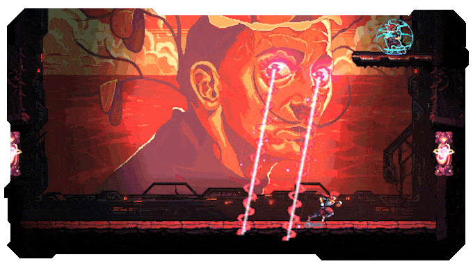
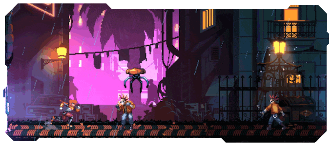
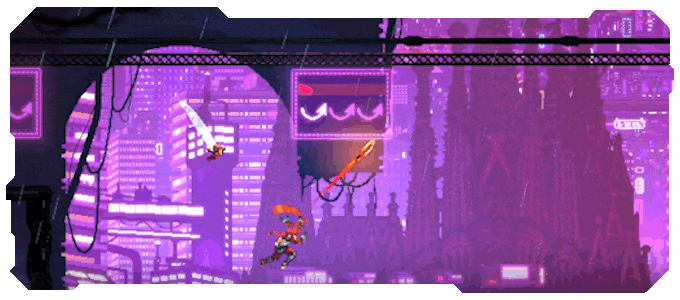
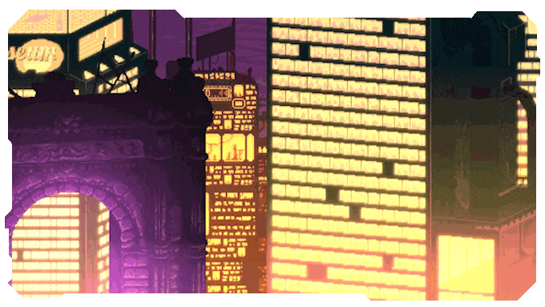
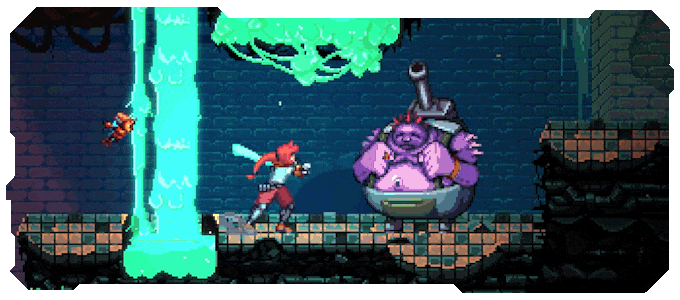
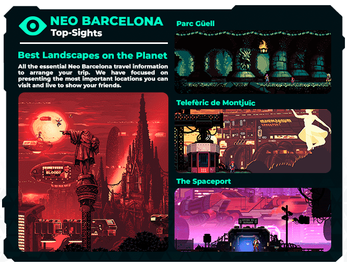

ENVIRONMENT ART
Environment composition across a large number of rooms and different biomes.

Neon-filled 2D Metroidvania set in an alien-infused Neo Barcelona.
Altered Alma is a neon-filled 2D Metroidvania with the rhythm of cyberpunk RPG adventures, where fast-paced combat meets strategic gameplay.
Set against the backdrop of an alien-infused Neo Barcelona, Altered Alma blends the atmospheric tension of Blade Runner with the intricate spaceship and crew management of Mass Effect 2.
Environment composition across a large number of rooms and different biomes.
Lighting and atmosphere design to reinforce the mood and identity of each environment.
Visual effects and shaders designed to make environments more expressive and memorable.
Implementation and iteration within Unity following an agile development workflow.








01 / 03